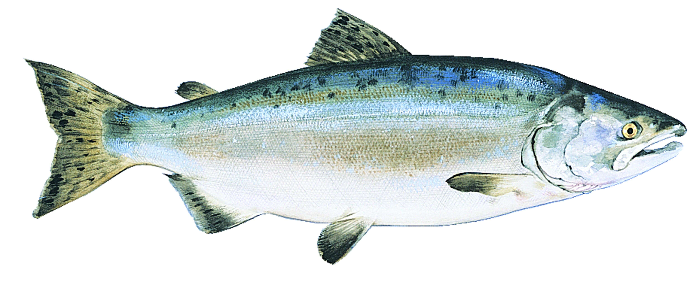

The Saimon Fish
Salmon is the common name for several species of ray-finned fish in the family Salmonidae. Other fish in the same family include trout, char, grayling and whitefish. Salmon are native to tributaries of the North Atlantic and Pacific Ocean. There are six types of salmon that are harvested in and around the waters of North America. There is one salmon from the Atlantic Ocean called the Atlantic Salmon, and five from the Pacific Ocean called Chinook, Chum, Choho, Pink, Sockeye.
Salmon eggs are laid in freshwater streams typically at high latitudes. The eggs hatch into alevin or sac fry. The fry quickly develop into parr with camouflaging vertical stripes. The parr stay for six months to three years in their natal stream before becoming smolts, which are distinguished by their bright, silvery colour with scales that are easily rubbed off. Only 10% of all salmon eggs are estimated to survive to this stage. The smolt body chemistry changes, allowing them to live in salt water. Smolts spend a portion of their out-migration time in brackish water, where their body chemistry becomes accustomed to osmoregulation in the ocean.
The salmon spend about one to five years (depending on the species) in the open ocean, where they gradually become sexually mature. The adult salmon then return primarily to their natal streams to spawn. Atlantic salmon spend between one and four years at sea. (When a fish returns after just one year's sea feeding, it is called a grilse in Canada, Britain, and Ireland.) Prior to spawning, depending on the species, salmon undergo changes. They may grow a hump, develop canine-like teeth, or develop a kype (a pronounced curvature of the jaws in male salmon). All change from the silvery blue of a fresh-run fish from the sea to a darker colour. Salmon can make amazing journeys, sometimes moving hundreds of miles upstream against strong currents and rapids to reproduce. Chinook and sockeye salmon from central Idaho, for example, travel over 1,400 km (900 mi) and climb nearly 2,100 m (7,000 ft) from the Pacific Ocean as they return to spawn. Condition tends to deteriorate the longer the fish remain in fresh water, and they then deteriorate further after they spawn, when they are known as kelts. In all species of Pacific salmon, the mature individuals die within a few days or weeks of spawning, a trait known as semelparity. Between 2 and 4% of Atlantic salmon kelts survive to spawn again, all females. However, even in those species of salmon that may survive to spawn more than once (iteroparity), postspawning mortality is quite high (perhaps as high as 40 to 50%.)
Ecology
In the Pacific Northwest and Alaska, salmon are keystone species, supporting wildlife such as birds, bears and otters.[51] The bodies of salmon represent a transfer of nutrients from the ocean, rich in nitrogen, sulfur, carbon and phosphorus, to the forest ecosystem.
Grizzly bears function as ecosystem engineers, capturing salmon and carrying them into adjacent wooded areas. There they deposit nutrient-rich urine and feces and partially eaten carcasses. Bears are estimated to leave up to half the salmon they harvest on the forest floor,[52][53] in densities that can reach 4,000 kilograms per hectare,[54] providing as much as 24% of the total nitrogen available to the riparian woodlands. The foliage of spruce trees up to 500 m (1,600 ft) from a stream where grizzlies fish salmon have been found to contain nitrogen originating from fished salmon.